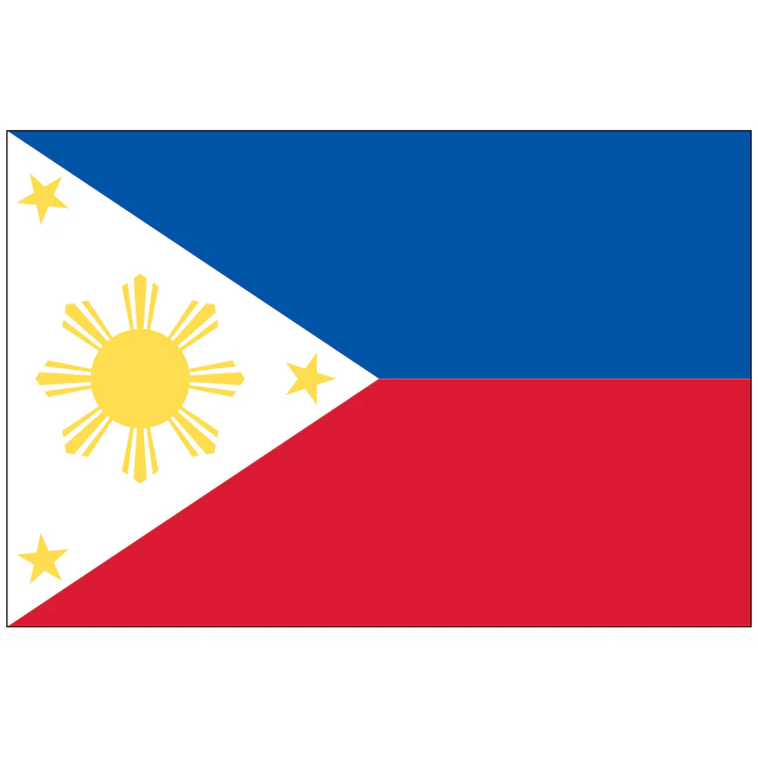

Lady Sheynn Vengco
About Me
Hi, I'm Lady Shane from the Philippines. I am currently pursuing a Certificate in Web and Computer Programming through BYU-Pathway Worldwide and BYU-Idaho while working full-time as a Quality Assurance Specialist and ESL Instructor. My passion for programming began in elementary school and has inspired me to continue developing my skills in web and software development. I enjoy learning new technologies, solving problems, and building solutions that make a positive impact. As I continue my educational and professional journey, I am committed to growing as a developer and creating meaningful digital experiences.
Cebu, Philippines

The Philippines is a vibrant archipelago in Southeast Asia known for its rich cultural heritage, breathtaking natural landscapes, and warm, hospitable people. With over 7,000 islands, it offers a unique blend of tradition, diversity, and modern innovation, making it a dynamic place to live, work, and grow.